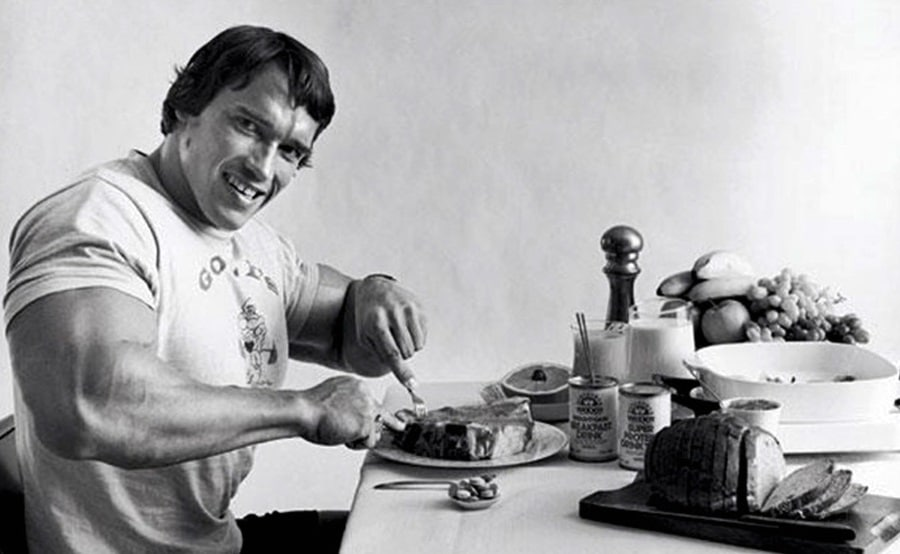

Ce înseamnă nutriția sănătoasă?
O alimentație sănătoasă înseamnă consumarea diferitelor alimente aparținând grupurilor alimentare de bază:
- Proteine, precum carnea, ouăle și legumele.
- Fructe și legume.
- Cereale, precum painea și pastele făinoase
O dietă sănătoasă necesită un plan, un scop, precum și efortul de a include în mese o varietate de alimente. Majoritatea persoanelor nu consumă suficiente nutritive deoarece nu includ în mese o cantitate corespunzătoare din fiecare grup alimentar.
Trebuie acordată atenție atât la cantitatea de alimente ingerată, cât și la grupele alimentare din care acestea fac parte. Nu este necesar să se consume zilnic o cantitate minimă de alimente din fiecare grup alimentar, ci să se ingereze cantitatea recomandată de-a lungul unei saptămâni.
Câteva mici schimbări sunt suficiente pentru a echilibra dieta. În majoritatea cazurilor, se elimină din alimentație multe substanțe nutritive importante.
Dieta lui Arnold Schwarzenegger
În primul rând, câte mese credeți că mânca Arnold zilnic? Într-un articol de presă mai vechi, acesta menționează: „Cred că mi-a mers cel mai bine atunci când am avut cinci mese pe zi. Există unii oameni care se pot descurca doar cu trei mese. Pentru mine, cinci mese au fost răspunsul pentru că nu am fost niciodată un consumator de cantități mari de mâncare. M-am simțit întotdeauna confortabil cu o friptură medie. Dacă mi-ai dat o friptura de 300 de grame, chiar și în perioada de glorie, eram fericit.”
Masa 1
3-4 ouă întregi, 2 bucăți de bacon, 1-2 felii de pâine cu unt de migdale sau ¼ cupe de ovăz cu miere, sau ¼ avocado, alaturi de un supliment cu multivitamine.
Pre-antrenament
Un supliment pre-workout fara creatina, dar cu agmatină pentru îmbunătățirea antrenamentului.
Post-antrenament
5 grame de creatina, 2 cupe dintr-un GAINER care continea BCAA, o sursa complexa de carbohidrați și grăsimi sănătoase (alaturi de lapte integral in loc de apa)
Masa 2
aproximativ 280 de grame de carne rosie sau peste la gratar, 1 portie de legume sau salata care cuprinde avocado, macadamia sau ulei de masline ca baza, 1-2 cartofi dulci, 60-90 grame de cashews, nuci sau migdale
Masa 3
2 cupe dintr-un GAINER care continea BCAA, o sursa complexa de carbohidrați și grăsimi sănătoase (cu 180 ml lapte).
Masa 4
340 de grame de carne slaba la gratar, 1-2 cupe de orez brun, 1-2 cupe de legume sau o salata mare incluzand avocado, nuci de macadamia sau ulei de masline ca baza
Masa 5
2 cupe de brânză de vaci, 60-90 grame de cajou, migdale sau nuci.
Înainte de culcare
Un supliment cu 5-HTP pentru imbunatatirea somnului.
În funcție de necesitatea fiecărei persoane, acestă pagină vă pune la dispoziție încă 3 programe alimentare, astfel încât să vă atingeți scopul într-un mod echilibrat și fără a vă pune în pericol starea sănătății sau modul de funcționare al organismului dumneavoastră.